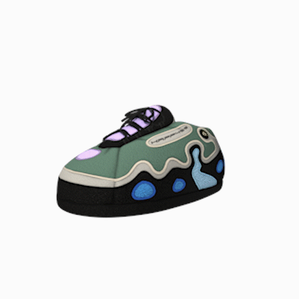

Speculum Apparatus
Date: 20/04/12
Skills: C4D, MatLab, Python,
C++, Premiere Pro, Algebra2
Team: Eduardo Juarez
A speculum is a duck-bill-shaped device that doctors use to see inside a hollow part of your body and diagnose or treat disease. One common use of the speculum is for vaginal exams. Gynecologists use it to open the walls of the vagina and examine the vagina and cervix. The two-bladed, or bivalve, speculum is the most common type of instrument gynecologists use to examine the vagina and cervix. The doctor inserts the speculum into the vagina and opens up the blades, which exposes the inside of the vagina and cervix.
Vaginal speculums come in different sizes. Which one of the following speculum types your doctor chooses depends on your age and the length and width of your vagina.Vaginal speculums come in different sizes. Which one of the following speculum types your doctor chooses depends on your age and the length and width of your vagina.Vaginal speculums come in different sizes. Which one of the following speculum types your doctor chooses depends on your age and the length and width of your vagina.

